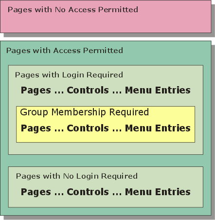

- Configuring and Running the Server
- Defining Security Settings
- Creating Login Components
- Web Users and Groups Dialog
- Adding Users
- Adding Users with a Web Component
- Defining Page Security
- Set Security Properties
- Defining Field and Menu Security
- Web Security Framework
- Publishing Security Files
- How Web Security Works
Web Application Security Framework
Overview
The Web Security Framework easily adds a sophisticated security system to any web application running on the Alpha Anywhere Application Server. The security system is integrated into the server operation. When the security framework is turned on, the server automatically checks every requested page or file for proper security clearance from information saved in memory. The server checks the page or file permission and will return the requested file if it is permitted within the security framework for the project containing the file. If the page or file is not allowed, the server automatically checks the security configuration to determine the proper response. This process is repeated for every page and file request, including images, CSS style sheets, and JavaScript files.
If a field on a component is not available to the user, the Application Server will remove it from the component on the page returned to the user. If a menu entry is not available to the user, its link will be disabled.
The following picture shows how the security framework categorizes pages, controls on grid and dialog components, and menu entries. Any page can be in one of three categories:
-
no access permitted
-
access without login
-
access after login and appropriate group membership
Access to menu entries and controls (on any page that requires login) can further require appropriate group membership

Implementing Security
You should following this sequence when implementing the security framework.
-
Enable the Security Framework at the Application Server Control Panel.
-
Create some page(s) that users can access.
-
Display the Web Projects Control Panel and click the Web Security button at the top right to display the Web Security Menu dialog.
-
Select Web Security Configuration and click OK to display the Security Settings dialog. Select the security options that you want to use.
-
Create a Login component, and a login page.
-
Reselect Web Security Configuration and click OK to display the Security Settings dialog. Add the name of the login page to the correct redirect settings.
-
Return to the Web Security dialog, then select Users and Groups to open the Web Users and Groups dialog. Create users, create groups, assign user IDs, passwords, and group memberships to your users.
-
If you wish to be able to add users through a web page, create the dialog component and control. Refer to Adding Users with a Web Component.
-
Return to the Web Security dialog, then select Page Security to open the Page Security Assignment dialog. Define which pages will be not accessible, which will be available without login, and which will be available only after login.
- Return to the Web Security dialog, then select Publish Security Security Files to open the Publish Security Dialog.
More Detail
There are a number of easy to use dialogs available to configure the security for a project. When a project is initially created, there are no security files. The top menu on the Web Projects Control Panel has a Web Security button. Open the Security Settings dialog, where various security options can be assigned. You must have at least one page defined in the project to build the security settings. The other menu options are disabled until these security settings have been defined.
The Security Settings dialog has many options to configure the web security or turn it off completely. Some of these options include requiring a password, configuring user ID and password validations, determining how to respond to an incorrect login, allowing the user to change their password, user id and password recovery, and many other options.
After you have defined all desired security parameters, you may build a login component. After you build the login, you may add it to a page. As with other components, parameter overrides on the page may modify the component's messages and style sheet(s). All of the code to validate the user and respond to the login actions is included within the component. The developer does not have to add any code to any page to implement security. Since the login page may not have existing prior to setting the initial security parameters, reopen the Security Settings dialog and add the login page name to the redirect options desired.
You can open the Users and Groups dialog to define the users and groups. The fields shown when entering or editing users are determined by the security parameters selected. Not all possible fields may be shown. The security system includes an option to activate a special field named 'ulink'. The value entered in the 'ulink' field can identify a related user record in an external table. There are options on the dialog to import user information from existing tables or export security data to an external table. The users, groups, and permissions tables are defined and controlled by the security system.
The next dialog in the security system is the Page Security dialog. The Page Security option on the Web Security Menu dialog to open the Page Security dialog. This genie assigns permissions for all pages within the project. Pages may be always allowed or require a login. If any page requires a login, you must assign one of more groups to it. Some pages may not have any assess defined. The server will automatically deny or allow these pages, based on the project's security configuration. After configuring the page assignments, you may publish the page security file from the menu or from the Web Projects Control Panel.
After you have defined and published the Security Settings, Login component, Users and Groups, and Page Security, the security system is ready to go. The server that contains the published files will automatically check all page and file requests for proper security clearance. If you make a change is made to any configuration parameter and republish the security files, the next page request will automatically use the new settings.
Maintenance Capabilities in the Web Security System
The Alpha Anywhere web security system also includes a number of options designed to assist the developer in maintaining the system. You may access and edit the security related fields in the user table from the Users and Groups dialog or from a web based form. A developer may design a standard dialog component following some simple rules and then very easily add the capability to populate the form with an existing user record, create a new user record, validate all data entered, and then save the results. This is done with a few simple function calls added to the dialog component server events. You can then add the dialog component to a page to allow editing the information directly on the web.
The users and group assignments shown on the Users and Groups dialog may not be the same as the values used by the application on the server. All of the web security tables are published to the application folder on the server and do not reside in the same location as other data files. If the security configuration allows a web user to edit information on line, the user information in the published location will be different than in the local files. The Web Security Menu has an additional option named Utilities. This opens the Retrieve Web User Data dialog. This option will retrieve the data on the server for the application and replace the local user files with the user files from the published location. All existing local user, group, and permission data will be replaced with the data retrieved from the published files. This option is also available from the Users and Groups dialog Import Users option.
Additional functions are available for use on a web page to return information about a current logged in user. This information can include almost any data from the user record and limited information about the security group assignment for the user. A security settings option exists to automatically create a session variable to hold a value from the user security table 'ulink' field if the field is activated. This information could then be used for other purposes, such as filtering records for display.
Summary
The Web Application Security Framework provides these high level capabilities.
Category |
Description |
Architecture |
The Application Server enforces all security. There is no need to publish any user access tables. The Application Server tests every page and file request. The developer does not need to write any code or place any code on pages. You may enable or disable security with a single setting in the Application Server Control Panel. Security settings are unique to each project. |
Login |
Login is an essential first step to providing any type of application security. Login identifies the user and requires a user name. Login may optionally also require a password. The new Login Component Builder simplifies the process of building login dialog components and enforcing login policies. Important password options include:
|
Passwords |
Passwords are an default part of the login process. Important password options include:
|
Users |
A user may belong to one or more groups. |
Groups |
You may grant access to a page, a control on a component, or a menu entry to one or more groups. Whether or not a user belongs to a group depends on whether it is important to selectively provide access to specific pages. |
Login Component |
The Login Component Builder provides support for nearly every login option.
|
Pages |
There are many aspects of page security.
|
Utilities |
Alpha Anywhere provides the Web Users and Groups dialog that you may use to enter, edit, or export basic user security information. You can also retrieve any user data added or edited on the web and update local user data. An import option exists to import security data from the server back to the project. |
Functions |
There is a large set of web application functions that will enable the developer to enter, edit, and validate web users from page scripts. |
Other Administrative Features |
The web application administrator may also lock out any user by user Id or unlock any user who is locked out. |
Limitations
Web publishing applications only.
See Also
Tracking logins in a SQL table, Add Users to Groups in Security
 NOTE: for Version 10 see Web Security Framework V10 for an important update about virtual page security and component level security. These are required for secure Ajax applications.
NOTE: for Version 10 see Web Security Framework V10 for an important update about virtual page security and component level security. These are required for secure Ajax applications.